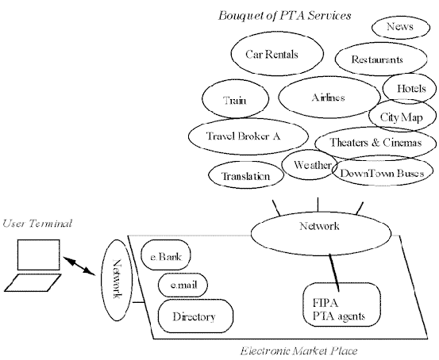
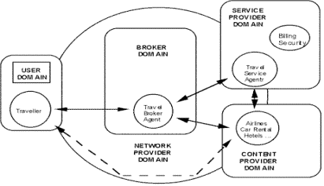
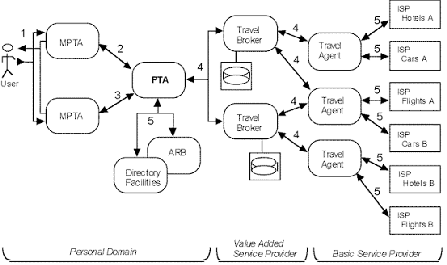
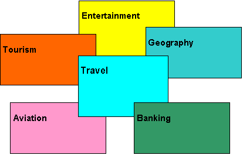

This document adds to the FIPA 1997 standard for inter-operating agents and agent societies by providing an application specification for the travel industry. This document provides
¾ An overview of the current industry in regard to agents;
¾ A reference architecture for a multi-agent system in this industry;
¾ Examples of the agent management details such as domains and naming;
¾ Examples of agent communication details such as content ontologies and communication protocols;
¾ Examples of agent/software integration such as for accessing databases and mobile users
This document does not pretend to be a complete specification of this large and complex industry, but such examples help to illustrate the use of FIPA 1997 standard and thereby quicken the development and deployment of real systems. On the other hand, some points of this architecture have been selected as semi-normative requirements for field trails in order to begin inter-operability tests of such trials in 1998. These requirements are noted throughout the document as they arise.
In summary, this document servers three purposes:
¾ Continue testing the FIPA technical specifications. The context of a real application serves to determine the strengths and weaknesses of the specifications.
¾ Demonstrate the real business value -- and requirement -- of a standard specification for such a large, distributed, multi-vendor application.
¾ Define initial application architecture, object design and use case analysis for actual development of field trials (see FIPA7604).
The number of agents and types of vendor in this application are beyond a complete specification in this document. The scope of the document is large, but serves only as a broad outline for actual development by individual vendors.
The following references are cited in this document. The FIPA standards are required for all field test based on this specification. All other standards are here used as examples. The specific field trials will determine which of these examples (or other standards) are most appropriate for the members involved (see FIPA7604 for current assumptions).
FIPA 1997 Part 1: Agent Management, Part 2: Agent Communication Language, and Part 3: Agent/Software Integration.
Geographic Data Files. European Committee for Standardisation for GeoPoints
ISO 639 for Language names.
ISO 3166 for Country names.
ISO 8601 for Date/time format
Provider
In the provider role, an organisation interfaces with a customer to agree to the provision of a service. This will involve producing a contract which records the conditions under which a service will be provided, and which will be agreed to by both the provider and customer.
Service provider
It is an entity that provides either telecommunications services, information services or both, as well as applications services. In the definition of service provider we address only services available on the network. In this case there are two types of services, services which are the subject of the brokerage (Travel Information Brokerage) and supporting services (security, billing, certificates).
Content provider
It is an entity that offers negotiable services or goods to users - directly or by the means of a brokerage service.
Network provider
It is an entity that provides all necessary networking functions to others actors.
Customer
In the customer role an organisation or individual interfaces with a provider organisation to procure services. Within this role the organisation or individual enters into a contract with a provider for the purpose of procuring services.
User
In the user role an organisation or individual uses a service procured from another organisation. Such use will be based on conditions laid down in a contract which was agreed between the organisation acting in a customer role and the other organisation acting in a provider role. The service can be a management service in which case the responsibility for the role would contain the responsibilities entailed by those services. The distinction between a customer and a user, is that the former defines the type and scope of the service made available by the provider through negotiation, whereas the latter uses the service within these agreed parameters.
4 Symbols (and abbreviated terms)
GSM: Global Systems for Mobile Communication.
HTTP: Hyper-Text Transfer Protocol, a commonly used protocol to transfer documents on the world wide web.
IIOP: Internet-interorb Protocol. See OMG
OMG: Object Management Group
OPS. Open Profiling Standard.
QoS: Quality of Service.
PA: Personal Assistant. See FIPA 1997 Part 5. PAs are expected to also participate in the PTA system.
PDA Personal Digital Assistant Small computing device, not an agent per se.
PTA: Personal Travel Assistance
UMTS Universal Mobile Telecommunication System
XML: Extended Markup Language.
A wide variety of travel related services are becoming increasingly available through electronic means. There is a need for convenient and ready access to these services, in particular for travellers. This presents a prime example to showcase the benefits of agent technology. Agents operating on behalf of their users can provide assistance in the pre-trip planning phase, as well as during the on-trip execution phase of a trip. A system supporting these services is called a PTA system.
In order to accomplish this assistance, these agents will interact with the user and with other agents representing the available travel services. The agent system is responsible for the configuration and delivery - including the right time, cost, QoS, and appropriate security and privacy measures - of trip planning and guidance services (e.g. multi-modal route planning, hotel and parking-lot reservations, individualised traffic guidance, cartography services, tourism information, plane reservation, metro guidance, weather conditions, public transportation, special events, Arts,...). Further, there is interaction with other supporting agents such as media agents, directory services (yellow and white pages), and information brokers that seek, evaluate and deliberate on information.
|
 |
Figure 1 A scene from FIPA enabling applications
The PTA system should support the following core functionalities:
¾ Different modes for request/response. The user does not need to be connected while a request completed;
¾ Composition of services. The system should provide an integrated experience even though the component services are disparate.
¾ Comparison of service offerings. The system should evaluate and provide the user with different service dimensions such as cost or other user’s experience.
¾ Learning the user profile. The system should become more efficient toward the user’s needs and habits with continued experience.
¾ Inter-operability of communication means. The same underlying services should be available through many different media such as voice-phone, pager, e-mail, screen-phones, and Web.
¾ Administration of agents. The system and user will need the ability to follow-up agents or otherwise change their behaviour at any time.
¾ Alerts. The user should be notified of significant events.
¾ Negotiation and transactions. The system should act on the user’s behalf to make deals and commit to purchases, for example.
This list of functions includes connectivity to basic services such as email as well as emerging services in e-commerce such as advertising and web casting. The PTA domain is rich with many basic and emerging possibilities, but for focus in this document, two test scenarios are developed, which represent the two basic phases of agent support:
¾ Pre-trip planning. The activities made in preparation for a trip, such as booking flights and hotels.
¾ On-trip execution. The activities required during a trip for successful execution such as monitoring the schedule and making changes to bookings as required.
Focusing on these primary scenarios, this document includes an overall outline of the agent types and roles, and the software and devices required for both phases. For instance, on-trip execution introduces the potential use of PDAs and the agents' attachments to cellular or GSM-based phones and GPS services. Other secondary scenarios are included in this document to demonstrate other aspects of the FIPA 1997 specifications; for instance, parts of an agent’s lifecycle and special focus of mobility will be included.
Travel is an excellent application to demonstrate because it includes so many external attachments that are of interest to many other applications. For instance, the Travel scenario will include
¾ Information Retrieval. Travel services provide both database and Web-based access and search
¾ Scheduling. Travel not only includes scheduling within its own domain, travel schedules must also interact with personal calendars and schedules. Calendar tools, e-mail, and other general office applications are required.
¾ End-user Mobility. Not to be confused with agent mobility, travel implies several mobile device modalities and problems of communication in connected/disconnected states
¾ Agent mobility. Because of user mobility, agent mobility is often indicated for the transfer of binary or script code through the network
Moreover, the Travel scenario includes very strong testing of agent-to-agent attachment and the internal capacities to support different agent roles. For instance, the following agent-based technologies are also of very general interest:
¾ Combined or Competitive Services. Compare attributes, negotiate cost and time
¾ User Profiling. Personal preferences, adaptive user modelling
The latter issue is not directly addressed by the FIPA 97 standard, but is critical to Travel and several other end-user driven applications. It should be addressed more in the future (also see OPS).
The application of agents to the Travel industry exposes some very important problems now being faced by agent developers and applications in many other industries as well:
¾ Web-based and Database-based Publication: As the travel service providers move from database to web-based pricing, for instance, agent developers are faced with the problems of HTML parsing. While this method is workable, it is very sensitive to minor and peripheral format changes. All agents of all vendors must spend a great deal of effort to maintain the agents' proper attachment. Both the database-based and Web-based content can include "agentised" mediation. Aside from some re-publication issues, one or a few agent-based services can parse and otherwise "logicise" the raw data, offering this service to other agents. Other solutions, such as XML tags for ontology and content are very sympathetic to agent development, and future Web-based service providers might directly provide the agent-based service as well, but in any case, other agents from other vendors should rely on a well-founded communication standard at the level of agents.
¾ Complexity of Market (De)Regulations: Travel policy (especially in world-wide travel) is complex and often unknown to human travel agents. These policies are highly distributed, from corporate policy to agency policy to national and international law. The representation and use of such policies is a fairly straight-forward knowledge engineering task. A distributed agent approach seems required to partition the problem and allow different vendors to provide different parts of the solution so that every agent in the system needs not carry all the responsibility.
¾ Complexity of Real-world Transactions: Travel planning is really a "super-transaction" of many negotiations. A service cannot merely find low fare, because lower fare is only one of many hard and soft constraints. A transaction cannot be based or concluded only for flight arrangements, because hotel, car, and many personal arrangements must also be established. To provide real value, a service should also be suggestive -- beyond the direct travel needs and the Personal Travel Assistance Services should collectively provide the end user with a complete travel package, not just the minimal travel documents. It should contribute for market expansion into other segments.
This last problem suggests the need to co-ordinate the transactions using agent-based protocols such as Contract Net and internal technologies such as incremental scheduling. Because these are very specialised techniques, the FIPA design philosophies for agent software integration and agent interaction provide a solution by distributing the responsibilities; PTA is a very large and difficult problem, best solved by vendor specialists in internal agent technologies, external software domains, and agent-to-agent protocols that can work together.
To summarise, the PTA services should provide an effective testbed of the technology-oriented normative parts of the FIPA 1997 standard.
Although the business analysis will not be fully developed in this document, it will give a hint of a generic Business Model of the PTA application. This viewpoint is on a system focus: on the purpose, scope and policies for the system. It can be modelled in terms of objects representing user roles, business and management policies. This viewpoint is concerned with the overall environment in which a system is to operate. In our case it spans co-operating organisations. In general the following figure represents the separate business domains.
|
 |
Figure 2. Relationships between Business Domains
This model can be used as a framework for:
¾ Analysing the organisational environment. This mainly includes network operators, service providers and customers. Which actors are involved and how do they relate to each other, i.e. their roles, their domains of activity, the inter-domain policies (security, billing), and what are the interactions between the system and the environment in which it is placed?
¾ Defining the requirements of actors. For instance, what are the requirements between customers with respect to providers, i.e. contractual relationships properties (security aspects, payment, QoS, ... )?
In each role, an actor performs different types of provisioning activities. Identifying these helps distinguish between different parts of an organisation and can indicate the types business and management support required.
This section derives definitions for each actor-agent involved in the travel brokerage service and identifies their roles.
Travel Service Agent(s)
These service agents are responsible for attachment to the data of their domain. The scope of each domain is arbitrary, but each such agent would tend to specialise in global flight plans and hotel arrangements or local hotel, car, and restaurant information. Other services might specialise in tourism or restaurants, for example, but globally. In either case, providing such "soft" added value about museums, theme parks, and special events/offers should be a strong part of agent co-operativity to build a more complete travel plan for the user.
In all cases, this agent type is responsible for maintaining the data access, interpretation and delivery to other agents. Such agents would typically use search services, too, in order to keep themselves up to date or to provide integrated / agentised search within the a travel domain to other agents. Any such agent service might be implemented as a "wrapper" around legacy databases or WWW page content. New services can be directly agentised, but this distinction is transparent to other agents.
Travel Broker Agent(s)
This agent is responsible to locating and contracting with Travel Service Agents. It can obtain the travel options from several services, filter and select from the alternatives, and legally bind a contract and travel documents based on a final selection. It can schedule and incrementally reschedule the entire travel plan across several service types (flight, train, hotel, special events).
This agent type provides its service to any "anonymous" user. In other words, its service connection with the user is only for the life of the super transaction; it does not serve as the personal agent to any one user and does not keep any persistent information about particular users, aside from its own auditing/logging needs.
Personal Travel Assistant
This agent acts on behalf of a user. It is legally authorised to act on behalf of the user, to the level allowed by the user. While conceptually seen as one personal assistant for each user, the implementation should be assumed to use a multi-user, server-based design. This agent type has many similarities to a Personal Assistant and might simply be a "cast" of it. This agent is responsible for remembering and following the user's instructions and learning the user's preferences based on choices or feedback after the trip.
Mini Personal Travel Assistant
This lightweight agent is typically very device-dependent, such as an agent operating on a PDA or laptop. For instance, bandwidth and modality become special issues. Although this tends to cause restriction of functionality, many additional functions such as GPS and GSM could be provided.
Some assumptions about these responsibilities might be changed or elaborated. For instance, the Travel Broker might maintain some of the personal information of users, such as simple travel preferences (airline seating, smoking or not). Also, value-added service can be provided by many different arrangements. For instance, the communication of the Mini Travel Assistant into the network-based agents can be various. Does the user/MiniPTA contact the Broker directly on the road or always go through the PTA? Can the user directly contact the Broker? Is the Personal Travel Assistant really a sub-function of a Personal Assistant (like a personal secretary)?
Each project will determine the answers to these questions, but for initial field trails of FIPA 1997 standards, this document will assume that Travel Broker Agent (as defined in this document) will interact with Personal Assistants (as defined in FIPA 1997 Part Five). The Personal Assistant will take the role of Personal Travel Assistant. In either case, the following scenario is primary for such field trails.
The typical dialogue between real users and travel agencies will be used as a guiding metaphor:
1) The user asks his/her secretary to make travel reservations for the next day. The user delegates the task to the agent. The agent is generally autonomous and bothers the user only for confirmation or in exception conditions. Time constraints for completion of this task might be explicitly stated or assumed according to the travel attributes or personal preferences (past history).
2) The secretary calls a Travel Agency. In the simplest case, the user's company might be pre-contracted with only one Agency, or the secretary might have some choice, but only within a list of approved and registered agencies. Assume that there is some sort of accreditation or professional membership that ensures/suggests competency.
3) The Travel Agency contacts several providers of services to build a complete plan. The Travel agent maintains a dialogue with the secretary, who has a better sense of the user, validates how the travel documents should be delivered, etc.
4) The secretary reports back to the user with a plan, options, and additional information. The secretary places the schedule with some travel information on the user's calendar, perhaps also setting reminders for when the user should leave to catch the flight.
5.6 External Software Integration
These different agent types have varying levels of integration to external software and/or other agents. For instance, Travel Service Agent responsibilities are most for attachment to data sources, whereas a Broker Agent's function is more abstract and more responsible to managing agent interactions. The following table lists only external software attachments.
Table 1 External Attachments for Different Agent Types
|
Agent Type |
Possible Software Attachments |
|
Travel Service Agent |
Existing Travel DB Services HTTP/HTML (for Web-based content) Broadcast protocols (e.g. RDS, DAB, ... ) Search Service (one or many, web-based or not) |
|
Travel Broker Agent |
Yellow-Page Directory (e.g. LDAP) White-Page Directory (e.g. LDAP) |
|
Personal Travel Assistant |
GSM (cell phone) Protocol Calendar / Scheduling Fax E-commerce (Cyber cash or others) Video server |
|
Mini-Personal Travel Assistant |
GSM Protocol GPS/Cartography Pager |
Note that the Travel Broker Agent uses directory services but provides much more. More than a directory service alone, a Broker is itself an agent and can provide the negotiation and consolidation of services as an added-value. Also note how the PTA might provide travelogue video services; although a Personal Assistant can also talk directly to a Broker, this is the kind of added value within a particular industry focus that a PTA can uniquely provide. This list is by no means exhaustive, but gives some idea of the integration components required and how these components might be reusable in other domains aside from Travel.
5.7 Internal Software (Degrees and Types of Intelligence)
Although FIPA 1997 has deferred the distinction between external and internal components, this document provides some examples and guidance.
For instance, there are two approaches. First, special internal engines such as for scheduling or learning can use the Agent/Software Integration standard of FIPA 1997 to attach such components to the agent. The internal reasonings of the agent can control other external and internal components equally. At least, applications can test this hypothesis: whether or not the external wrapper interface can be used to attach internal capabilities of the agent to each other as well.
Second, any special intelligence function can be made into a first class agent that provides such scheduling or translation of learning services. This approach too should be tested with different applications and compared with the first approach.
In some regards, the two approaches are very internal components of intelligence to be viewed recursively -- an large-grained agent's internal composition is a "society of minds" based on smaller, semantically simpler agents. Wrappers are much like very simple agents using a subset of communicative acts.
These notions need further specification and test, but for this PTA application, the following internal capabilities seem to imply certain internal components and its is assumed that such components would be included as components in the explicitly named agents of the PTA system.
As mentioned below, internal capabilities are not mentioned by the FIPA 1997 standard but are important considerations for the application design. The following table lists the types of technology the agents are likely to require to serve each of their purposes.
Table 2. Internal Capabilities of Different Agent Types
|
Agent Type |
Possible Internal Capability |
|
Travel Service Agent |
Rule-based inferencing Procedural scripting |
|
Travel Broker Agent |
Rule-based policy and planning Contract-net Rationality Acquaintance Modelling |
|
Personal Travel Assistant |
Rule sets Preference facts based on end-user instruction Learning for adaptive user model |
|
Mini Personal Travel Assistant |
Some micro-kernel capabilities, especially for user interaction, need local installation Server-loadable procedures such as Java binary code or script (dynamic "brains") |
Travel Service Agents have simple requirements; they typically will respond to requests for information. Simple rule based or even scripting systems for the most basic services will be typical.
Travel Broker Agents are probably the most complex agents. They must adhere to industry and owner policies. They should follow a number of co-operation and negotiation protocols. This is the most appropriate place for rational agents that can understand and respond very flexibly to any number of different situations. As included in the scenarios below, the Broker Agents should maintain an acquaintance model, such as for management of long-term associations with other agents.
As for the Personal Agents, basic inferencing is probably appropriate, but the addition of end-user modelling (learning) will be of increasing importance in such agents. The Mini-PTA is more peculiar. It should act much like the PTA, but given the device sizes it must live on, the Mini-PTA per se needs to be more minimal and rely on networking to other agents to provide its intelligence as perceived by the user. Some core capabilities will need to be installed, but aside from communications with other agents, alternative architectures employing mobile code can dynamically load the Mini-PTA as needed.
While the fundamentals of human-agent and agent-agent interaction should be based on the same underlying formal dialogue model, the entire set of FIPA technologies at this point does not seem to support the full application development. Particularly, there are neither standard interfaces and component definitions for supporting the graphical/text and/or voice/speech interface directly at the end-user, nor translation tools from these "natural" representations to the formal model. To compensate, the above scenario assumed a highly restrictive end-user input form, which would have to be tightly coupled to the dialogue representation.
A very important issue to consider is the "just necessary level" of user interaction. How is this established? By standard user interface controls and techniques? This problem requires specialised studies to define just necessary level: how are user preferences established and how do preferences interact with task complexity. Acceptability of the Personal Travel Assistant -- and all other assistants -- will be based largely on matters of trust and control.
Even though human-agent dialogue tools are not now specified by FIPA, this application specification includes a Dialogue Wrapper, which translates any software user-interface events and media applications into FIPA compliant communicative acts and content within the agent.
Life cycle management is the first concern of the PTA system, even before the system is deployed. The domain definitions, agent naming, and registrations must be handled first.
PTA requirements for e-commerce and personal profile give great need to addressing security. Basic services for ensuring the financial transaction and certification of documents are required. Much of this can be assumed by appropriate use of the underlying protocol (SSL or SHTTP, for example). FIPA and the PTA Ontology in this document do not provide for electronic commerce directly, but Agent Management does provide basic authentication mechanisms.
Because Agent Management directly represents the application architecture, the following section starts to provide more explicit designs as examples of Agent Management.
6.1 Services Architecture and Protocols
|
 |
The PTA architecture should act as a reference model which identifies and characterises the components, interfaces, and protocols. The following diagram shows the general application architecture of the pre-trip planning system.
Figure 3. PTA Architecture
The diagram represents the various agent types and the communication types between them. This section provides a description of representative agents, some representative platforms, and then the protocols between them. Conventions such as for agent naming will be followed as they are developed by the Agent Management specification, but note that much of what is below is deliberately inconsistent (when consistency is not required) to demonstrate the probable state of multi-vendor vagaries.
Assume that a small company, CompanyXYZ, has installed an agent platform in which a multi-user implementation of a PTA is added. Each employee also is given a PDA with a mini-PTA. CompanyXYZ has agreements and policies to use World Travel Agency business travel. As an added value to its employees, CompanyXYZ has also developed its PTA to look-up value-added brokers to arrange for their personal interests, as well. These agencies are associated with various basic service providers.
|
:agent-name |
Mini-pta.joesmith@CompanyXYZ.com |
|
:agent-type |
PTA-mini |
|
:agent-services |
:service-ontology user :service-description (notify | available) :service-ontology pta :service-description :location |
|
:interaction-protocols |
Fipa-request |
|
:ontology |
User PTA |
|
:address |
Gsm://minipta/~smith.1 |
|
:ownership |
Joe Smith |
Joe Smith is given a mini-PTA because he travels a lot for Company XYZ. Because of its limited capacity, it understands only fipa-request protocol, but can provide unique service to the entire PTA system of agents. Assuming an ontology called user, it can handle the operation of notifying the user, if he/she is available. For on-trip monitoring, it can provide :location of itself, through its GPS attachment for example.
|
:agent-name |
Pta@CompanyXYZ.com |
|
:agent-type |
PTA-personal-travel-agent |
|
:agent-services |
:service-ontology PTA :service-description :service-ontology user :service-description PersonalInterests |
|
:interaction-protocols |
Fipa-contract-net Fipa-auction-dutch Fipa-request |
|
:ontology |
PTA |
|
:address |
iiop://companyxyz.allagents:9000/acc |
|
:ownership |
Company XYX Limited Partnership |
Assume that a small company such as XYZ would have only one personal travel agent as a multi-user system to service its entire staff. As a small company, XYZ allows any flights with any carrier in order to get the cheapest fare and therefore, this PTA can follow Dutch auctions as well as contract net for conversation – either with brokers or with service providers directly. The company itself owns this PTA in order to control it in regard to corporate travel policies for example. Not only does the PTA handle the PTA ontology for making regular travel arrangements, note that it only understands user profiling. Residing on a server, the PTA is responsible for holding such personal profiling information (common travel preferences as well recreational interests perhaps).
|
:agent-name |
TravelAgent76@WorldTravel. |
|
:agent-type |
PTA-broker |
|
:agent-services |
… |
|
:interaction-protocols |
FIPA-contract-net FIPA-request-when |
|
:ontology |
PTA |
|
:address |
iiop://worldtravel.brokers:9000/brokeracc |
|
:ownership |
World Travel Incorporated |
As a large travel company, WorldTravel has a bank of several agents. This is number 76. As a broker, this agent understands contract-net for negotiating basic travel arrangements, but also provides monitoring functions for its customers by using the request-when protocol with its service providers. For instance, when a certain condition occurs concerning a reservation or the availability of a resource, the travel broker is notified and can in turn notify other acquaintances.
|
:agent-name |
Touragent@tokyotourism.com |
|
:agent-type |
PTA-broker |
|
:agent-services |
… |
|
:interaction-protocols |
FIPA-request |
|
:ontology |
User-PersonalInterest |
|
:address |
iiop://toyko.tourism.broker:9000/acc |
|
:ownership |
Tokyo Tourism Bureau |
A tourist office in Tokyo with a small budget wants to participate in the PTA system by registering its agent with several brokers as a free value-added source of information. It is itself of broker of other agents in its geography, but it is informational only. For instance, given a user’s personal interests, it can connect a PTA to an appropriate soft-service agent. It might also provide information about these soft services but does no transaction itself; it only needs the FIPA-request protocol.
|
:agent-name |
Domestic389@flightplanners.foil.com |
|
:agent-type |
PTA-server |
|
:agent-services |
:service-ontology PTA :service-description ( reserve | purchase ) (PTA-MeanType :plane) :language KIF1.0 |
|
:interaction-protocols |
Fipa-contract-net |
|
:ontology |
PTA |
|
:address |
Iiop://FOIL.planners:9000/brokeracc |
|
:ownership |
FOIL Incorporated |
A very large flight reservation company maintains a number of agents, some for domestic travel and some for international. It can make reservations or accept purchase for flights, but for flights only.
|
:agent-name |
Gardenguide@kewtgardens.com |
|
:agent-type |
PTA-server |
|
:agent-services |
:service-ontology PTA :service-description (contains :pointOfInterest Gardening) |
|
:interaction-protocols |
Fipa-request |
|
:ontology |
Yahoo PTA |
|
:address |
http://kewt.agents:9000/guideacc |
|
:ownership |
Kewt Gardens |
A public garden that has a Web site for itself and links to other points of similar interest could register with a broker to provide information in this recreational domain. Although IIOP was initially required to register with the brokers, it then changes its preferred address to use HTTP, perhaps to use a future HTTP user profiling standard. Note also that the ontology assumes Yahoo-based classification as a de-facto standard for specifying a user’s interests.
The following descriptions provide a list of examples using the FIPA 1997 platform profile definition.
6.3.1 Small Company Agent Platform
|
:platform-name |
CompanyXYZ.allagents.home |
|
:iiop-url |
Iiop://companyxyz.allagents:9000/acc |
|
:dynamic-registration |
No |
|
:ownership |
CompanyXYZ Limited Partnership |
|
:certification-authority |
Change-environment administrator Delegation-allowed (user miniPTA) (administrator PTA) Grant-services within-platform Access-DF within-platform |
|
:default-DF |
CompanyXYZ.df |
The XYZ company knows and provides all agents to its employees and so the agent system design is tightly controlled; the broker agents that the company has decided to use are known and static. Therefore, it does not allow dynamic registration. Authority is given to the administrator only and all permissions for accessing services and the DF are limited to agents within this platform. If any broker wants to contact the PTA, it must be based on its acquaintance model developed from the PTA’s initial contact with it.
6.3.2 Travel Broker Agent Platform
|
:platform-name |
WorldTavel.brokers |
|
:iiop-url |
Iiop://worldtravel.brokers:9000/brokeracc |
|
:dynamic-registration |
Yes |
|
:mobility |
No |
|
:ownership |
WorldTravel Incorporated |
|
:certification-authority |
Change-environment administrator Delegation-allowed no Grant-services within-platform CompanyXYZ.personal-travel-agent access-DF within-platform |
|
:default-DF |
WorldTravel.serviceYellowPages |
The Travel Service company obviously wants to allow outside agents to use its services. Otherwise, no delegation is allowed.
6.3.3 Agent „Hotel“ Platform (on-trip execution)
|
:platform-name |
ParisAgentSpace |
|
:iiop-url |
iiop://ibm.paris.agentspace:9000/checkin |
|
:dynamic-registration |
Yes |
|
:mobility |
Yes |
|
:ownership |
Itty Bitty Machines Incorporated |
|
:certification-authority |
Change-environment administrator Delegation-allowed no grant-services (service-provider guest) (content-provider guest) access-DF yes |
|
:default-DF |
ParisAgentSpace.consierge |
Here, the metaphor of travelling agents as entourage to the human traveller is entertained by giving mobile agents a temporary home as well. The requirement is obviously not to rest; indeed, the agent can be continuously very active. But such a platform and availability of a local DF as concierge provides a natural metaphor for many agent-based services.
The platform grants the agent access to all the services and content granted to guest authority. Many such services can be provided by the hotel itself or by surrounding partner agents in the local area. For instance, the hotel can provide its services to a human guest to the agent; the agent can request the room service to deliver the user’s preferred breakfast at the preferred time, for example. But note that such a platform can also be hosted by a company other than the hotel itself.
The specific transport mechanisms (TCP/IP, GSM, SHTTP, etc.) for each of the agent-agent or agent-GUI connections in the above diagram, as well as the default method for inter-platform routing should be more fully described. However, this is still problematic. For instance, GSM is not available world-wide. The agent definitions as provided are suggestive, but each application will have to determine some of these issues case-by-case.
The following table provides the list of Directory Facilitators and the agents registered to them (and DFs registered to other DFs) for the pre-trip planning architecture.
Table. Example of Directory Structure for Pre-Trip Planning Agents
|
Directory Facilitator |
Registered Agent |
|
CompanyXYZ.df |
CompanyXYZ.personal-travel-agent CompanyXYZ.mini-pta.joesmith.agent1 WorldTravelService.brokerListing TravelGuideBroker |
|
WorldTravelService.yellowPages |
FOIL.plannersDirectory GreatDealAuctioneer |
|
FOIL.plannersDirectory |
FOIL.planner.international FOIL.planner.US |
|
TravelGuide.recreationalDirectory |
KewtGardens.englishgardenguide WorldSoccerFederation.ticketseller |
This table illustrates the agent-to-agent relationships that are most likely. For instance, a corporation is usually responsible for software distribution to its employees, in this case providing the directory of PTAs, MiniPTAs within its own domain, as well as contracted relationships to one or two travel brokers.
The travel brokers maintain a directory of service agents. These service agents are usually associated with well known, large service providers in the case of corporate travel agents, but generally, brokers might also keep web-based travel service agents in their directory.
Large service providers might keep their own directory of service agents, and associate different agents to different requests as a method of call handling. For instance, some service agents in a larger agency might handle international travel, while others handle local arrangements. These sorts of service differences would be registered in the directory.
Ontologies are needed to serve as a medium of common understanding among the collaborating agents. The Travel Ontology should be defined in a precise and consistent way to ensure an unambiguous interaction model between the disparate agents. More specifically, it is a significant part of the protocol that collaborating agents necessarily communicate the same terms or vocabularies to mean the same concepts or ideas for the same context. There are already several methods for building ontologies and languages to express them (Prolog, L-Lilog, Ontolingua, Loom, Back++, etc.). However, there is not a well-known ontology built on travelling.
The Travel Ontology does not exist by itself, neither is it self-sufficient to represent the PTA. Separation and cross-references to other Ontologies is necessary as indicted in the following figure.
|  |
Figure 4. Potential Ontologies for Travel and Associated Domains
As FIPA moves to support ontology definition and publication, these various ontologies will in fact become better separated. But because the development and publication of ontologies per se is still evolving, the PTA Otology will be defined here. For other possible relationships to Travel, consider the other application specifications in FIPA 1997 Parts Five to Seven. For instance, the Entertainment domain is applicable for referencing video travelogues as a special case for video-on-demand.
Non-FIPA standards such as for Geographic Data Files will be referenced whenever they exist. Of course, primitive types such as Time, String, and numerical formats such as Double are specified by ISO standards (see Normative References). Other ISO standards such as for Language and Country codes are also mentioned as normative.
The PTA Ontology referenced below is merely a starting point for the future. Its primary purpose is to help the inter-operability of early field trials of this application. These field trials will become the true drivers of the ontology. For instance, electronic commerce (the Banking domain) is currently ignored in the following definitions but is required for real transactions in Travel.
The following types of PTA content can be used for basic request-reply protocols as a start for PTA field trials. Assuming that a PTA or PA is the sending agents for example, it can query a Broker or Service Provider agent. This agent can reply with the request of return an exception. The following definitions are purely informative, but as Broker/Service Provider systems are developed and published, and as PTA or PA systems are developed and wish to early-test these services, the following should be used as a common reference.
PTA messages should use the following types of content:
PTA-Content ::= PTA-TripSummary | PTA-TripDetails | PTA-Exception | PTA-Evaluation
The sender will tend to provide PTA-TripSummary as part of a query for travel arrangements, passing its parameters as a set of constraints. The receiver will reply with PTA-TripDetails or PTA-Exception. PTA-Evaluation will be described later as a method for the sender to pass „relevance-or-trash“ evaluations of the receiver’s replies.
PTA-TripSummary is the initial object sent as follows:
PTA-TripSummary
::=
”(” ”:tripSummary”
”(” ”:origin” PTA-Location
[ ”:via” PTA-Location* ]
”:destination” PTA-Location
”:time” PTA-TravelTime+
[ ”:returnTravelTime”
PTA-TravelTime* ]
[ ”:budget” PTA Budget ]
[ ”:generalPreferences”
PTA-GeneralPreferences ]
[ ”:cTPreferences”
PTA-CTPreferences ]
[ ”:iTPreferences”
PTA-ITPreferences] ”)” ”)”
Origin, destination, and time are all that are required in this object. PTA-TravelTime defined below allows for exact time or a time-constraint range. More than one time can be included. All other fields are optional such as via locations, return time and several ancillary parameters such as language and preferences. Budget is also passed as an optional constraint.
PTA-Locations are of various types as follows:
PTA-Location
::=PTA-Address | PTA-ParkAndRidePoint |
PTA-PointOfInterest |
PTA-TextLocation | PTA‑UnresolvedServicePoint |
PTA-ResolvedServicePoint | PTA-TaxiStand | PTA-GDFNode |
PTA-ResolvedCity
PTA-TextLocation is the most basic type, allowing any string-based description. PTA-Address is self-explanatory below. PTA-PointOfInterest begins to allow the addition of soft-service information such as from Tourism. „Resolved“ and „UnResolvedServicePoints“ distinguish between well known locations of service providers versus general locations that are less well defined. PTA-GDFNode is a Geography-based location defined by Geographic Data Files (see normative references). The location types and supporting types are defined as follows:
PTA-Address
::= ”(” ”:address”
”:country” CountryCode ”:city”
String ”:zIPCode” ZIPCode
”:street” String ”:houseNumber”
String ”)”
PTA-ParkAndRidePoint
::=
”(” ”:parkAndRidePoint”
( PTA-UnresolvedServicePoint |
PTA-ResolvedServicePoint ) ”)”
PTA-PointOfInterest
::=
”(” ”:pointOfInterest”
”:country” CountryCode ”:city”
String ”:name” String ”)”
PTA-TextLocation ::= ”(” ”:textLocation” String ”)”
PTA-UnresolvedServicePoint
::=
”(” ”:unresolvedServicePoint”
”:country” CountryCode ”:city”
String ”:name” String ”)”
PTA-ResolvedServicePoint
::=
”(” ”:resolvedServicePoint”
”:serviceProvider”
PTA-ServiceProviderID ”:iD” String
”:name” String
[ ”:mean” PTA-MeanType ]
”:country” CountryCode ”:city”
String
[ ”:coordinate” Double Double ] ”)”
PTA-MeanType ::=”:underground” | ”:commuterTrain” | ”:bus” | ”:tram” | ”:lowFloorBus” | ”:train” | ”:magneticTrain” | ”:cableRailway” | ”:ship” | ”:chainTrain” | ”:suspensionRailway” | ”:plane” | ”:foot”
PTA-TaxiStand
::=”(” :taxiStand
”:country” CountryCode ”:city” String ”:name” String
[ ”:coordinate” Double Double ]
”)”
PTA-GDFNode
::= ”(” ”:gDFNode”
”:nodeID” UnsignedLong ”:name”
String ”)”
PTA-ResolvedCity
::= ”(” ”:resolvedCity”
”:country” CountryCode ”:city”
String ”:iD” String ”)”
CountryCode ::= GE | US | UK | FR | ... // ISO 3166 [add more countries –ed]
ZIPCode ::= String
Time is a particularly important, general ontology that needs co-ordinated development and normative specification in the future. For now, PTA-TravelTime includes the semantics for arrival and departure but otherwise relies on basic Time representation according to ISO standard (see normative references and FIPA 1997 Parts One to Three for more detailed specification).
PTA-TravelTime ::= ”(” (
”:departure” | ”:arrival” )
( ”:at” Time
| ”:after” Time [ ”:before” Time ]
| ”:before” Time ) ”)”
PTA-Budget is similar to time in being a scalar constraint, specified either as a point or as a range as follows: low enough.
PTA-Budget ::= ”(”
”:at” Currency” UnsignedLong
| ”:lower” Currency UnsignedLong
| ”:upper” Currency UnsignedLong ”)”
The sender can establish a budget range by specifying an upper spending limit for example. The receiver can reply with the exact amount using the „:at“ parameter. Such a budget can also be used in other scenarios such as for a Dutch Auction. The budget can be used to trigger the automatic purchase by an agent when the price meets the constraints.
The entire domain of user profiling needs more focus in FIPA and other efforts such as OPS. For instance, the user’s preferred language is a general matter beyond just PTA. But until such preferencing ontologies are more fully developed, the following items are useful within the domain of PTA and its field trails.
Three types of preferences are defined. PTA-GeneralPreferences indicate preferred means of travel such as train versus car. Such means of transport are then divided into „common travel“ and „individual travel“, represented by PTA-CTPreferences and PTA-ITPreferences, respectively. Common travel such as by plane or train has different parameters than individual travel such as by car.
PTA-GeneralPreferences ::=
”(” ( ”:byCost” | ”:byTime” | ”:byComfort” )
”(” ”:preferred” (
”:collectiveTransport” |
”:individualTransport” |
”:urbanPublicTransport” |
”:intercityCollectiveTransport” |
”:individualCar” |
”:taxi” ) ”)”
”(” ”:exclude” (
”:collectiveTransport” | ”:individualTransport”
|
”:urbanPublicTransport”
|
”:intercityCollectiveTransport”
| ”:individualCar” |
:taxi ) ”)”
[ ”:language” LanguageCode* ]
[ ”:mapForRoute ]
[ ”:mapForOrigin ]
[ ”:mapForDestination” ] ”)”
LanguageCode ::= ”GE” | ”FR” | ”UK” | ”US” |... // ISO 639,
//
add more language codes -ed
byCost, byTime, byComfort can be optionally included by the sender to convey QoS requirements. The receiver should be expected to use the parameter to both clip and order the results. For instance, consider that byComfort is selected as the QoS requirement and that is implies the minimisation of via-points. If the receiver finds enough direct routes, it might only reply with these more comfortable routes and not a full list of possibilities.
The sender can select preferred modes and excluded modes of transportation. The language of the travel documents and the inclusion of maps can also be specified.
PTA-CTPreferences
::=
”(” ”:requestedClass” ( ”:first” | ”:second” | ”:business” |
”:economy” |
”:lastMinute” )
”:fare” ( ”Child” | ”Senior” |
”MonthlyPass” | ”WeeklyPass” | …
”:publicUrbanPreferences”
”(” [ ”:footPathKnown” ] [
”:escalatorRequested”]
[ ”:handicapForEntry” ]
[
”:maxNumberOfTransportChanges”
UnsignedShort ]
[ ”:maxMinutesOnFoot”
UnsignedShort ]
[ ”:heavyLuggage” ] ”)” ”)”
PTA-ITPreferences ::=
”(” ”:preferredSpeed” ( ”:lorry” | ”:bus” | ”:carRelaxed” |
”:carHurry” )
[ ”:parkingAtDestination” ]
[ ”:weatherInformation” ] ”)”
Common travel preferences include class of travel and consideration of special fare assignments or selections. Note the meaning of „individual travel“ to include common services such as buses, but which allow the user an anonymous and individual means of transport.
Given a PTA-TripSummary as a query, the receiver will typically reply with PTA-TripDetails as follows:
PTA-TripDetails
::=
”(” ”:tripSummary” PTA-TripSummary
”:serviceSegments” ( PTA-ITSegment*
| PTA-CTSegment* )
”(” ”:additionalInformation
”(” ”:information” String
”:essential” | ”:important”
| ”:unimportant” | ”:remark”
”)” ”)” ”)”
TripDetails include the PTA-TripSummary. The constraints passed by the sender are replaced by the specific values or the trip-plan. For instance, the exact time and budget of the trip are provided. Additional information is appended, typical of travel documents for providing contact numbers, emergency procedures, and such as text to the user. Most importantly, the details of the trip are provided in serviceSegments.
As with preferences, service segments are either for common or individual travel: PTA-CTSegments and PTA-ITSegments, respectively.
PTA-CTSegment ::=”(” ”:cTSegment”
”(” ”:servicePoint” PTA-ResolvedSevicePoint
”:summary” PTA-TripSummary
”:serviceLinks” PTA-ServiceLinks* ”)” ”)”
PTA-ServiceLinks ::=
”(” ”:transportLine” PTA-ServiceProviderID
”:origin” PTA-ResolvedServicePoint
”:departureTime” Time
”:destination”
PTA-ResolvedServicePoint
”:arrivalTime” Time
”:delay” UnsignedShort ”)”
CTSegments are composed of PTA-ServiceLinks. This level of detail might not always be presented to the user except in summary form, but formally, a common travel segment often includes plane „hops“ or train „stops“. These links are important to construct and monitor a trip. For instance, the „:delay“ parameter is useful for agent-based monitoring of a plan as the service moves from node to node.
PTA-SeviceProviderID ::= ”JL” | ”KE” | ”NH” | ”DB” | ”LH” | ”BAY_INFO” | ”AA” | ...
Service providers are identifiable by either standard naming conventions as in the airline industry or by other publishable means. These examples include German railways such as Deutsche Bahn (DB), and airlines such as Lufthansa (LH) and American Airlines (AA).
A PTA-ITSegment has a similar structure to a CTSegment. Both include Trip Summary to provide location, time, budget, and preference information for each segment. Both indicate service points, but ITSegments might include unresolved service points, as well. For instance, car transportation might require a rental car (from a resolved service point) or simple a personal car (unresolved service point).
PTA-ITSegment ::=”(” ”:iTSegment”
”:servicePoint”
PTA-ResolvedSevicePoint | PTA-UnresolvedServicePoint
”:summary” PTA-TripSummary
”:gDFLinks” PTA-GDFLink* ”)”
Most importantly, ITSegments are composed of GDF-based links rather than PTA-ServiceLinks. For individual travel, the trip definition and its navigation are based on geographical points.
PTA-GDFLink ::= ”(”
”:linkID” UnsignedLong ”:name” String
”:locationOfStart” [ Double Double ]
”:locationOfEnd [ Double Double ]
”:turnInstruction” [ ”:goStraight” |
”:turnLeft” |
”:turnRight” ]
”:length” UnsignedLong
[ ”:travelInfo” String ] ”)”
Note that the link definition includes not only its definition but its navigation. The end of each link is marked by an obvious landmark for wayfinding (such as an intersection), and the link includes directions on how to proceed to the next link.
Exception conditions are relatively straight forward. Several exception types are handled by the same objects. They are typed by parameter and the type-specific data is included according to the following definitions:
PTA-Exception ::=”(” ”:type” ( :locationAmbiguous | :noCTConnection |
:locationNotFound | :serviceNotAvailable |
:noAddressInfoForCity )
”:data” [ PTA-LocationAmbiguous | PTA-NoCTConnection |
PTA-LocationNotFound | PTA-ServiceNotAvailable |
PTA-NoAddressInfoForCity ]
[ ”:why” String ] ”)”
PTA-LocationAmbiguous ::= ”(”
”:location” PTA-Location
”:alternatives” PTA-Location + ”)”
PTA-NoCTConnection ::= ”(” ”:from” String ”)” ”(” ”:to” String ”)”
PTA-LocationNotFound ::= ”(” ”:location” PTA-Location + ”)”
PTA-ServiceNotAvailable ::= ”(” ”:serviceName” String ”)”
PTA-NoAddressInfoForCity ::= ”(” ”:city” String ”)”
The sender agent is expected to use these content objects within the failure communicative act. The sender is typically a Broker or Service Provider agent, replying to a request from a PTA or PA. For instance, if the PTA specified a PTA-Location that was unknown to the Service Provider, the latter would reply with PTA-LocationNotFound.
Aside from the objects just described, the PTA Ontology specifies a small number of operations within this domain. Again, this is informative and only a beginning to this ontology but should be enough to start field trails.
PTA-Operations ::= PTA-Reserve | PTA-Unreserve | PTA-Purchase | PTA-Modify
After a query and return of TripDetails, the PTA or PA (typically) will ask to reserve or purchase any or all segments of a particular plan. For later changes, PTA-Unreserve is also included. PTA-Modify will be discussed later. Note that the FIPA ACL ‘cancel’ can be used as a Communicative Act to simply cancel the conversation, if nothing further is needed after the initial inquiry.
PTA-Reserve ::= ”(” ”:reserve” PTA-Segment + ”)”
PTA-UnReserve ::=”(” ”:unreserve” PTA-Segment ”)”
PTA-Purchase ::= ”(” ”:purchase” PTA-Segment + ”)”
Currency ::= ”DEM” | ”FRF” | ”GBP” | ”USD” |... // String according to ISO 4217
Currency will obviously be required at this point, but at the time of this writing, this ontology does not provide details for electronic commerce such as for security and financial exchange.
The following are more advanced functions that are intriguing for more intelligent negotiation of travel plans.
PTA-Modify ::= ”(” ”:modify” PTASegment … ”)”
PTA-Evaluation ::= ”(” ( ”:relevant” KeyValuePair * |
”:trash” KeyValuePair * ) ”)”
The first item, :modify, needs further development but is intended to allow the PTA or PA to request change of particular segments.
The second item is more interesting. Here, the intention is to allow the PTA or PA to request more plans from the broker or provider by simply evaluating some elements of given plans as relevant or trash. Such as in information retrieval systems, the user (through means of the agent) or agent autonomously can initially query for travel plans but then dialogue with the provider by simply selecting the plans or plan-items that seem good and asking for more such plans. Optionally, the user or agent can tell the provider what is not so good.
7.4 Elaboration of User-profile
The purpose of the user profile is to improve the PTA service to the user as well as to the broker or service/content providers. Personalisation means ease of filling the request - since many personal data are constant - and also means service modifications and propositions according to the accuracy of the user profile. From the user's point of view, personalisation affects the search process, assistance and the presentation of results. From the service/content provider's perspective it helps in better matching the user needs. As examples for the PTA, we should have in the user profile the following information:
Some items of „preference“ were included in the ontology above, but much more is possible in this special domain. Even most simply, the requirements for e-commerce should include the user’s preferred method of payment in a structure such as
PTA-payment
::= ”(” ”:payment”
”:means” ( Visa | MasterCard |
AmercianExpress | ... )
”:balance” Currency UnsignedLong
”:limit” Currency UnsignedLong ”)”
The hotel would also like to know whether a smoking or non-smoking room is preferred. This is a property of the user that might by granted to the hotel for this need, but the ontology of travel preferences as given above, general user preferences beyond travel, and the attachment of interests profiles to the items in any other ontology need future consideration by FIPA and application test in PTAs.
There are also many other complexities to what is generally called a user profile. Aside from the more static and clear attributes of the user such as name, telephone and email addresses, we need to more clearly differentiate what is called "personal profile" into three separate structures:
1) The ontology of domains such as travel, recreation, sports, entertainment, music
2) An explicit preference structure mapped onto this ontology ( :preference carrier AirFrance )
3) An implicit preference structure, also mapped onto this ontology, such as learned patterns of the user's behaviour within a given ontology.
In other words, the ontology description of virtually all items should first exist separately from the user profile as already emphasised in the previous section. Moreover, the functions "preference" and "interest" can be applied. If it is of value, a distinction between these two might be:
· Preferences. Reserved for the user's probable selection from a short, well defined list (forced choice situations).
· Interests. Described personal strength of like-dislike on a single item (rating situations).
In summary of the PTA ontology, this document introduces a start towards the definitions of trip segments, especially in multi-modal travel. It highlights some inclusion of soft services and the important application of position and wayfinding technologies. It is still inadequate for the definition of node-based resources such as hotels and attractions. Its reference to electronic commerce standards such as SET still need development for real business transactions to take place. And towards integration with other standards issues of user profiling and privacy, such as Open Profiling Standard, much more can also be done to make such an application available.
The following command is issued by the operating system in a boot/autoexec script or manually by the user.
prompt> PTAAgent -start -df DFAgent@df_host.PTA.com
This invokes the PTAAgent as background process, passing it a Directory Facilitator’s address. The PTAAgent can subscribe to many agent domains, but in this case now registered to one.Even though the following scenarios have not yet elaborated the need for multiple registrations across domains, it is expected that agent providers will "slice" the application domains many different ways according to their business. For instance, some services will be based on geography, others on service type.
The Agent then internally executes something like the following statements:
self.state
= unknown;
...
self.state
= suspended;
self.ACC.send( request
:sender self.name
:receiver self.myDF
:content ( register
(
:agent-name self.name
:agent-services
self.capabilities
:protocol FIPA-request
:ontology Agent-Life-Cycle
:address self.address
:ownership self.user
:state
suspended ) )
:language
fipa-agent-management
:context ( ( :protocol
fipa-request ) )
... );
...
self.state
= active;
self.ACC.send( request
:sender self.name
:receiver myDF
:content ( modify
(
:agent-name self.name
:state
active ) )
:language
fipa-agent-management
:context ( ( :protocol fipa-modify ) )
... );
Agent is now booted and active! This scenario assumes that the DF is already booted and active; note that this same algorithm works for the DF too such as for registering itself with a „master DF“
This scenario is focused exclusively on the details of agent interaction. As such, the following interaction diagram shows the four agents involved and the Communicative Acts between them

 PTA DF TravelBroker1 TravelBroker2
PTA DF TravelBroker1 TravelBroker2
1. request
2. inform
3. query-ref
4. refuse
5. inform
6. inform
7.request
Figure. Agent Interaction for Pre-trip Planning
A formal description of intentions and some of the important content description is described as follows:
1. request. Request Directory Facilitator to find more than one Broker. Message content requires some rough description of service offerings/capabilities.
(request
:sender PersonalTravelAgent
:receiver an-df
:content ( search ( :service (
:service-type TravelBroker ) ) )
:language SL0
:ontology fipa-agent-management
:reply-with KarlsTrip
)
2. inform. The DF looks through its local yellow pages or ask-if other DFs. It informs the PTA with list of 2 Brokers meeting the service requirements. Note that the DF has NOT been required to open the communication to the Brokers or to ensure their current existence after their registration.
( inform
:sender an-df
:receiver PersonalTravelAgent
:content ( :result ( :agent-name
TravelBroker1
:agent-name
TravelBroker2 ) )
:in-reply-to KarlsTrip
)
3. query-ref – The PTA ask one of the Brokers for information (no contractual obligation) for a possible trip. Note that the PTA uses the iota operator when communicating with the Broker, which requires the SL2 language rather than SL0 as required for agent management. This does not imply that SL is required for field trials; this content language in this scenario is provided only as an example.
(query-ref
:sender PersonalTravelAssistant
:receiver TravelBroker1
:content ( iota ?tripDetails (
available TravelBroker1 ?tripDetails :tripSummary
( :origin (
:countryCode GE :city Frankfurt )
:destination
(:countryCode FR :city Dublin )
:time ( :departure (
:after 19971010T170000Z
:before 19971919T240000Z ) ) ) ) )
:ontology fipa-PTA
:language SL2
)
4. refuse. One of the two agents refuses because it knows about two cities with the same name. It notifies the PTA of this error and gives the two cities as alternatives.
( refuse
:sender TravelBroker1
:receiver PersonalTravelAssistant
:content ( :action TravelBroker1
”query-ref…”
( :type
:locationAmbiguous
:data
:location ( … :city
Frankfurt… )
:alternatives (…:city
”Frankfurt am Main” …
:city ”Frankfurt a. d. Oder” )
:why ”There are two
cities in Germany with the same name.” ) )
:reply-with exception123
)
5. The PTA corrects this problem by informing the broker agent with its selection of a more exact city of origin.
(inform
:sender PersonalTravelAssistant
:receiver TravelBroker1
:content (:resolvedCity (:country DE
:city ”Frankfurt am Main” :id … ) )
:ontology fipa-PTA
:in-reply-to exception123
)
6. inform. The Broker Agent can now reply with TripDetails. The broker has found and suggests a flight with Lufthansa Airlines. The departure time is at 18:05 on the requested day, within the constraints originally given by the PersonalTravelAgent.
(inform
:sender TravelBroker1
:receiver PersonalTravelAssistant
:content
( tripDetails
( :tripDetails
( :tripSummary
( :origin
(:countryCode DE :city ”Frankfurt am Main” )
:destination
(:countryCode IR :city ”Dublin” )
:time (:departure
(:at 19971010T180500Z ) )
:serviceSegments
( :cTSegment
(
:resolvedServicePoint
( :serviceProvider
LH
:name
”Lufthansa Airlines”
:country ”DE”
:city
”Frankfurt am Main” )
:summary …
:serviceLinks … ) )
:information … ) ) )
)
)
7. request. The PTA is satisfied with this plan and proceeds to reserve the suggested serviceSegment.
(request
:sender PersonalTravelAssistant
:receiver TravelBroker1
:content ( :reserve
( :cTSegment
(
:resolvedServicePoint
:serviceProvider LH
:name ”Lufthansa
Airlines”
:country DE
:city ”Frankfurt am
Main” )
:summary …
:serviceLinks ... ) )
)
8.3 Elaboration of Pre-trip Planning
While pre-trip planning is mostly a matter of reserving or purchasing hard travel documents, the full PTA system is intended to include the added value of „soft“ services. This scenario demonstrates such an elaboration of pre-trip planning. As mentioned in the Ontology section, the profiling ontology is not ready for field trial usage. However, this elaboration assumes such an ontology will at least include an object named PersonalInterest, which is used in this scenario, which continues where the last scenario ended.
The travel broker asks the PTA whether it can have access to the user’s preference profile in order to add additional entertainment items to the travel plans.
(query-ref
:sender TravelBroker1
:receiver PersonalTravelAgent
:content ( iota ?profile (
accessProfile PersonalTravelAgent ?profile ) )
:language SL2
:ontology fipa-profile
:conversation-id profileRequest123
)
The PTA decided to provide the Broker with a subset of the user’s profile. It provides three interest items, defined by the item itself and the item’s ontology, as follows:
(inform
:sender PersonalTravelAgent
:receiver TravelBroker1
:content( :profile (
:personalInterests
( :interest
football :ontology sport )
( :interest
ballet :ontology culture )
( :interest
gardening :ontology hobby ) ) )
:conversation-id profileRequest123
)
The broker replies with a Botanic Garden in Dublin as a potential point of interest for the end user.
(inform
:sender TravelBroker1
:receiver PersonalTravelAgent
:content ( :pointOfInterest
:country IR
:city Dublin
:name Botanic Gardens )
:conversation-id profileRequest123
)
The PTA ontology does not yet extend to „node“ items such as hotels, much less to soft travel items such as entertainment events. However, with such extension a similar conversation could also provide a means for the broker to suggest ballet or football tickets and the PTA reserve or purchase them and they become part of the complete travel package.
8.4 Last-minute Auction for Lower Fare
Another airline provider notices a large number of open seats on one of its flights (which happens to satisfy the flight plans in the above scenario). The airline provider agent contacts several brokers, one of which is the broker in the above scenario. The broker contacts the PTA that owns the travel documents to see if it (or the PTA's user) would be interested in a possibly cheaper fare.
(inform
:sender ServiceAgent1
:receiver acquaintances*
:content ( ( sell seats 100 )
( :tripSummary
:origin ( :countryCode
DE :city Frankfurt am Main )
:destination (
:countryCode FR :city Paris )
:time ( :departure (
:at 19971010T170000Z ) )
) )
:ontology (fipa-PTA fipa-Market)
:protocol fipa-auction-dutch
)
The auctioneer agent opens the auction at some starting price and invites takers for that price from the audience. The auctioneer in this case is assumed to be the ServiceAgent1 but this is not necessary. Additionally, assume that the PTA has registered itself with the auctioneer and is one of the agents participating in the audience.
(cfp
:sender auctioneer
:receiver (audience c )
:content ( ( buy ticket ) ( ( max-no
20 )( cost 100 ) ) )
:reply-with cfp0
:context fipa-auction-dutch
)
If no audience takes bid, the auctioneer counter-proposes with a lower price.
(cfp
:sender auctioneer
:receiver ( audience c )
:content ( ( buy ticket ) ( ( max-no
20 )( cost 99 ) ) )
:reply-with cfp1
:context fipa-auction-dutch
)
Audience1 agent takes a bid.
(bid
:sender audience1
:receiver auctioneer
:content ( ( buy ticket ) ( ( no 5 )
( cost 99 ) ) )
:in-reply-to cfp1
)
The auctioneer accepts this bid.
(accept-offer
:sender auctioneer
:receiver audience1
:content ( audience1 ( buy ticket )
( ( no 5 ) ( cost 99 ) ) )
:in-reply-to cfp1
)
The auctioneer continues to invite takers with a lower price.
(cfp
:sender auctioneer
:receiver ( audience1 audience2 c )
:content ( ( buy ticket ) ( ( max-no
15 ) ( cost 98 ) ) )
:reply-with cfp2
)
This new cfp, bid and accept-offer cycle continues until the number of seats becomes 0 or it arrives at minimum price. If the number of goods offered is insufficient, the auctioneer may reject a bid as follows.
(reject-offer
:sender auctioneer
:receiver audience2
:content ( audience1 ( buy ticket )
( ( no 5 ) ( cost 97 ) ) )
:in-reply-to cfp3
)
At last the auctioneer tells the audience that the auction is finished.
(inform
:sender auctioneer
:receiver ( audiennce1 audience2 c )
:content ( done auction )
)
This scenario focuses more on the required software attachments rather than agent interaction. This scenario description is still incomplete, but the following diagram shows the Inform-Request performative within the simple client-server protocol between an agent "core" and its wrappers.
GUIEvent User asks miniPTA, "Where am I?" This is not a performative between user and agent. The dialogue wrapper is simply receiving an event from a piece of software.
DialogWrapper informs agent core of event, but now in terms of dialogue semantics and content.
(inform
:sender DialogWrapper
:receiver MiniPTA
:content ( :gUIEvent WhereAmI )
:ontology fipa-UserDialog
)
5. MiniPTA makes a query of GPS coordinates.
(query-ref
:sender MiniPTA
:receiver MapAgent
:content ( iota ?x ( :nearbyCityList
?x ( :GDFPosition ( 135 35 ) ) ) )
:ontology fipa-GDF
)
6. inform. The MapAgent returns the list of nearby cities.
(inform
:sender MapAgent
:receiver MiniPTA
:content (Akashi)
:ontology fipa-GPS
)
7. request. The MiniPTA requests the DialogWrapper to display the information about the city of the current position.
(request
:sender MiniPTA
:receiver DialogWrapper
:content ( :gUIAction ( :display
„The city of the current position is Akashi.“) )
:ontology fipa-UserDialog
)
8. GUIEvent. The DialogWrapper displays the information through the GUI.
The following is another scenario where the MiniPTA migrates on the network.
1. GUIEvent.
2. inform.
3. migrate. The MiniPTA migrates to the chair’s machine to behave locally in the machine. This operation contains rather complex protocol using the planned FIPA ’98 Agent Management functionality. After this migration, the MiniPTA is referred to as Chair.
4. subscribe. The Chair requests the GPSWrapper to notify it when the GDF co-ordinates of the user change.
(subscribe
:sender Chair
:receiver GPSWrapper
:content ( iota ?x ( :currentGDFPosition
?x ) )
:ontology ( fipa-PTA fipa-GPS )
)
1. inform. The GPSWrapper informs the Chair its GDF co-ordinates when they change.
(inform
:sender GPSWrapper
:receiver Chair
:content ( :currentGDFPosition ( 135
35 ) )
:ontology fipa-GPS
)
1. query-ref. The Chair requests to translate the GPS co-ordinates to a list of nearby cities.
(query-ref
:sender Chair
:receiver MapAgent
:content ( iota ?x ( nearbyCityList
?x ( :GDFPosition ( 135 35 ) ) ) )
:ontology fipa-GPS
)
7. inform. The MapAgent returns the list of nearby cities.
(inform
:sender MapAgent
:receiver Chair
:content (Akashi)
:ontology fipa-GPS
)
The following notations provide some initial definition of agent planning, plan decomposition, and communication in the context of plan monitoring. These steps are assumed to tie Pre-trip planning with On-trip execution. For instance, Pre-trip planning should include distribution of the plan to multiple agents, such as between the miniPTA and PTA.
A plan is composed of plan items such as
P = P1 • P2 • P3 • ... • PN
which can be decomposed for the purposes of parallel execution of the monitoring
Monitor(P) = Monitor(P1) | Monitor(P2) | ... | Monitor(PN)
Given this parallel execution, the task of monitor can be distributed to many agents at many places as best (at the GPS input, at the flight database, etc.).
PTA owns the entire composite plan at pre-trip phase. Given the registered capabilities of other agents to accept the Monitor performative, the PTA can request other agents to monitor parts of the plan. For instance, the PTA can distribute some elements to the miniPTA or to the Service Provider Agents. For instance in the latter case, the PTA can request a Service Agent to notify it if schedule or other conditions change (change of airports due to fog has implications to change car reservations as well).
Local re-planning, could ripple to other subplans
internalMonitor(Pi) {
deltaT = | currentLocation -
Pi.arrivalLocation | / EstimatedVelocity;
while ( currentLocation !=
Pi.arrivalLocation &&
currentTime + deltaT <
Pi+1.departureTime &&
Pi+1.departureTime ==
Pi+1.carrier.departureTime ) {
// Efficient monitoring should
be a function of time to next plan step
sleep( O( deltaT ) );
}
if ( currentLocation ==
Pi.arrivalLocation ) return;
// k should be a minimal useful
index, the short required replan
Pi+1 • ... • Pk = replan( Pi+1 • ...
• Pk );
}
9 Examples of Agent/Software Integration
This example shows how a wrapper to web-based content hosting can be provided by a third-party vendor.
Parsing is awful but is the only recourse available for an agent to access web-based content. Hopefully, ontology tags or other future WWW schemes will help, but the general design will still hold; the wrappers can be provided to provide a mapping between the raw content and its representation to a level of ontology and an agent-based representation.
This example shows how such a third party vendor can provide added-value to the PTA community of agents, so that every agent in the system does not have to re-implement such lower level attachments. The content structure is likely to often change, but this wrapper provider can monitor and moderate such changes for several agents.
Also assume that the web-based content provider offers a Dutch Auction to human participants from time to time. The GreatDeal Web site publishes this event on its site such that the GreatDealParser can determine this event automatically.
(request
:sender GreatDealWrapper
:receiver AgentResourceBroker
:content ( register-wrapper
:service-type
GreatDealParser
:parent-type HTTPWrapper
:ontology Market
:events( :priceChange
:greatDealAuction )
:sensors( :currentPrice
carrier flightNumber )
:transport-medium HTTP
:transport-address
www.greatdeal.com/pricetable
:message-format text
:message-encoding xdr
:language fipa-acl
)
)
(query-ref
:sender FlightServiceAgent
:receiver GreatDealWrapper
:content(currentPrice
:carrier AA
:flight 712
)
)
(inform
:sender GreatDealWrapper
:receiver FlightServiceAgent
:content(:price USD 400 )
)
9.1.3 Notification of price change
The wrapper might support a subscription method to receiving such notification, but in the simplest case, consider that the wrapper will trigger the following message when any published price changes on the price table page.
(inform
:sender GreatDealWrapper
:receiver FlightServiceAgent
:content
(:event priceChange
:carrier AA
:flight 712
:price USD 250 )
)
9.1.4 Internal procedural attachment
The methods by which the GreatDealWrapper attaches procedures to these sensor and effector requests is entirely the wrappers private responsibility. Assuming that the wrapper "proxy" converts the request message structure into a wrapper's request method, the following pseudo-code demonstrates how a Java-based adapter would implement the explicit procedure. The proxy calls this method, which either returns the reply-contents or throws and error if not understood.
public String query-ref( String content )
throws Error {
try {
//Uses a
KIF parser to build attribute-value table in ctor
ContentHashtable
contentTable = new ContentHashtable( content );
switch (
myTokenTable.lookup( contentTable.get( ":event" ) ) ) {
//
in this case we have only one Token for currentPrice
case
currentPrice_Token: {
String carrier = contentTable.get(
"carrier" );
Integer
flight = contentTable.get( "flightNumber" );
String
price = myGreatDealParser.price( carrier, flight );
return
( "price" + price ); }
default:
//Proxy
will catch error and return notUnderstood message to agent
throw new
ProxyError(notUnderstoodError, "Unknown content request!");
} // end
switch
} // end try
} // end query-ref
Note that the example of a web content agent for local gardening attractions (given in example Agent Definitions) would need similar wrappers such as to Kew Garden's home page for example. The wrapper would b very similar to this one, except that the wrapper's events and sensors would be different and a different HTML parser would be used in the implementation.
Also assume that for this WebFareWrapper, such commonly useful events such as page-changed are inherited from the parent-type HTTPWrapper. Such an event would be generally useful to all web-content agents in order for them to alter their registered service description if needed. For example, if the content of a page changes, the agent could check the integrity of the parser for the given wrapper. If it is no longer capable, the agent can modify itself and its registration as needed until the problem is fixed. As another side-effect, the agent could page the administrator-developer about the parser problem to fix it as fast possible.
9.2 BAYERNInfo service wrapper
This is an example of a specific existing service. Very high level intermodal route planning. Restricted to Bavaria.
(query-ref
:sender
CompanyXYZ.mini-pta.joesmith.agent1
:receiver BAYERNInfoWrapper
:content( street-route
:start-location ...
:end-location ...
:start-time 1700 )
)
10 Future PTA Developments
10.1 "Migrating" Agent to Guide Travelling Users
Mobile end-users are a major driver toward mobile agent technology. Agent mobility continues to be controversial, but the applications to PTA as a natural abstraction for this application design seem clear. Mention of mobility occurs throughout this document already, but for the future, the following scenarios are useful to further consider.
10.1.1 Mobility of the agent in a network: travel planning
The traveller is based in Germany and organises a business trip to Korea and Japan. The costs of communications and their bandwidth have to be minimised, long distance calls should be avoided. While in Germany, the PTA checks for flight facilities. Then it moves into the Korean domain containing the information on local arrangements as well as entertainment facilities. The organisation of the meetings with the partners requests the use of negotiations so to find the best schedules for everybody. In case of drastic time constraints such negotiations require lots of efforts. The hotel reservation may be done by an auction to find the best conditions. Thanks to its autonomy, the PTA overcomes all the problems and collects only the required information according to the flight schedules possibilities. For example it will provide the list of concerts expositions and other events the traveller may attend during the stay. It moves to Japan to carry the same work out and to finalise the trip possibilities. Finally the PTA returns to Germany with the schedules of the meetings, the entertainment, hotel and car reservations etc.
This scenario shows benefits for the traveller - in terms of quality of planning and lower travelling costs , the PTA service provider - brings high added value, can bill the client, the services in Korea and Japan - new and convenient media.
In particular the mobility of the agents provides shorter response times, minimises the cost of the transmissions and lowers the passing band requested by the application.
10.1.2 Mobility of the traveller: travel monitoring
The traveller packs the miniPTA in his/her luggage so to be able to connect to his/her virtual office environment in a transparent manner, e.g. the email, the ongoing work, the internet. The agent migration reduces the connection costs by moving some agents in fixed network, so to gain efficiency and lower bandwidth.
Another function of the mobile miniPTA is to monitor the progress of the travel. While staying in Korea a typhoon hits the country and the flight of our traveller is cancelled. As such our traveller will pass one extra day in Korea, but has to reschedule his/her meetings in Japan. The miniPTA will provide access to the requested data, propose to reschedule the journey, the meetings, contact the Japanese partners, inquire for entertainment possibilities in Korea and finally inform the German colleagues and family of our traveller of the new travel arrangements.
In this case, the miniPTA has to access the local entertainment resources in Korea, but needs some agent mobility to minimise the connection costs to Japan and Germany.
10.1.3 Mobility of the traveller: travel monitoring via UMTS
The mobile telecommunication world permits to access anybody anywhere at any time. As such the service offered by the UMTS miniPTA are greatly enhanced. By taking our earlier example, the user gets the weather forecast as soon as it is published. The miniPTA may reschedule the trip in time to finish business in Korea before the arrival to the Typhoon. In such a case the traveller benefits of the full pro-activity of the agent approach and anticipates the problems.
In addition to the mobility issues already mentioned, the UMTS miniPTA may need to move their agents into the fixed infrastructures in aiming to reach high computer resources that cannot be integrated into the UMTS miniPTA today, as energy consumption or weight constraints are extremely critical design parameters for such machines.
10.2 Inter-operation between Agents and Workflow
The agent design model was born from a blending of roots from artificial intelligence and transaction systems. In the latter, other models such as workflow have come to mature and are closely related to agent applications. Relationships between workflow and agents models is becoming very important to several application domains. In the case of PTA, the relationship between travel agents and corporate approval procedures should be considered On the one hand, the practical matter of agent application – as in this PTA example – indicates a need to understand and inter-operate with other such technologies already established. One the other hand, understanding and comparison of both underlying models can be explored and tested within the context of FIPA directions and its relationships to other evolving standards.
FIPA's First Call for Proposals (CFP1), Fipa, Tokyo, Japan, October 1996
Proposal for application type Travel planning and management, FT-CNET, Oct. 1996
ACTS-ABS (Architecture for Brokerage Services), ABS technical documents, Jan. 97 (e-mail: leger@ccett.fr)
European Telematics Application programme: Transport PROMISE, (Personal Mobile Traveller and Traffic Information Services), Public documents (e-mail: hannu.hakala@nmp.nokia.com)
MoTiV-PTA. See http://www.motiv.de/
JKQML (Java KQML) and KQML-speakable agent: documented examples, 4.0 Personal Travel Agent Sample, IBM Object Technology Systems, Yamato Lab, Japan (e-mail: anakada@vnet.ibm.com )
Approval Management System using Mobile Agent, FIPA call for proposals for 1998, Cheju, June 1997
PLANGENT: An Approach to Making Mobile Agents Intelligent. A. Ohsuga, Y. Nagai. IEEE Internet Computing, August 1997.